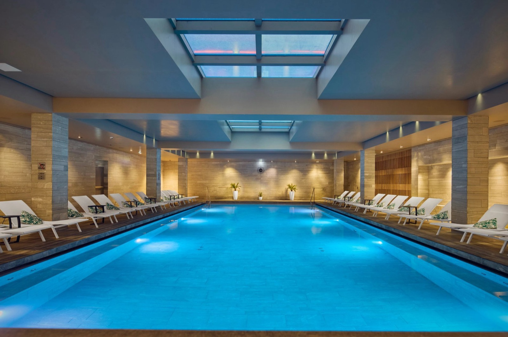

Meilleurs hôtels de luxe en Normandie : les 8 adresses 5 étoiles de 2026
Huit maisons classées 5 étoiles, de la campagne du Bessin au front de mer de Deauville,
départagées par le score LMHS et l'Indice Héritage Normand. La première n'est pas
celle que les palmarès citent, et le plus grand hôtel de la sélection n'est que troisième.
Par Swann Bertaud, rédacteur hôtellerie de luxe✺Publié le 14 août 2026✺17 min de lecture
Le Château La Chenevière à Commes, manoir du XVIIIe siècle restauré en 1988,
première adresse de ce palmarès. Photo : site officiel.
L'essentielTrois adresses, trois façons d'aimer la Normandie
Château La Chenevière (Commes, près de Bayeux), 9,2/10 : manoir du
XVIIIe, parc de douze hectares, deux tables et la meilleure note de nos
classements normands, toutes catégories confondues.
La Ferme Saint-Siméon (Honfleur), 9,0/10 : l'auberge des impressionnistes,
Indice Héritage Normand 5,0/5, le seul maximum de la région, et
deux Clés MICHELIN.
Hôtel Barrière Le Normandy (Deauville), 8,9/10 : l'icône à colombages
de 1912, Spa Guerlain et piscine couverte à 28 °C. La plus prestigieuse des huit, et
de loin la moins intime.
Palmarès documentaire. Nous n'avons pas séjourné dans ces huit maisons
pour cette édition, et nous le disons plutôt que de le laisser croire. Capacités, prestations
et distinctions ont été relevées le 14 août 2026 sur les sites officiels. Les notes de
La Chenevière, La Ferme Saint-Siméon, Château d'Audrieu,
Hôtel Saint-Delis et Le Grand Hôtel de Cabourg sont reprises à l'identique de
notre palmarès des hôtels de charme en
Normandie, afin qu'une même adresse ne porte jamais deux notes différentes sur ce site.
Cette page ne retient que les établissements classés 5 étoiles. C'est ce qui
la distingue de notre sélection des hôtels
de charme normands, qui accueille aussi des maisons de six chambres et des châteaux d'hôtes
sans classement. Trois adresses entrent ici sans figurer là-bas, parce qu'elles relèvent du luxe
hôtelier plus que du charme : Le Normandy et ses 271 clés, l'Hôtel de
Bourgtheroulde et son spa de 700 m², les Cures Marines et leur centre
marin de 2 500 m².
Nous les avons classées selon le Score LMHS sur 10, issu de notre grille
Destination, et l'Indice Héritage Normand sur 5, qui mesure l'ancrage régional
réel : architecture à colombages ou en pierre de Caen, produits du terroir à la table, vue mer
ou bocage, épaisseur historique du lieu.
Notre sélection : les 8 meilleurs hôtels de luxe en Normandie en 2026
01
Château La Chenevière, la campagne du Bessin 9,2/10
Un manoir du XVIIIe siècle entièrement restauré en 1988, posé dans un
parc de douze hectares entre Bayeux et les plages du Débarquement.
29 chambres et suites seulement, ce qui est peu pour un domaine de cette
taille, et c'est précisément l'argument : la densité de personnel par chambre y est la plus
favorable de notre sélection. Deux tables, le gastronomique Le Botaniste et
le bistrot Le Petit Jardin, ce qui évite le piège du restaurant unique où
l'on dîne trois soirs de suite. Piscine extérieure chauffée de mi-mai à mi-septembre,
orangerie, court de tennis, vélos à disposition. Le bémol : la saisonnalité de la piscine,
et un emplacement qui suppose une voiture, à quinze minutes de la mer. Pour qui vient
d'abord pour le calme et pour Bayeux.
29 chambres · Parc de 12 hectares · Deux restaurants · Piscine chauffée mi-mai à mi-septembre ·
Site officiel →
02
La Ferme Saint-Siméon, l'auberge des impressionnistes 9,0/10
C'est ici que l'impressionnisme a commencé, et ce n'est pas une formule : Boudin, Monet,
Jongkind et Courbet y ont peint l'estuaire de la Seine entre 1850 et 1870. L'ancienne
auberge est Relais & Châteaux depuis 1964 et compte
35 chambres, dont vingt avec hammam privatif, une signature rare à ce
niveau de gamme. La table Les Impressionnistes, confiée au chef
Matthieu Pouleur, sert un menu « Nuances » qui travaille les produits de
l'estuaire. La maison détient deux Clés MICHELIN et figure au Top 1000 de
La Liste 2026. Elle porte le seul Indice Héritage Normand à 5,0/5 de la région.
Le bémol : le spa reste modeste au regard du classement, et le stationnement à Honfleur est
une épreuve en saison. Notre avis détaillé
sur la Ferme Saint-Siméon revient sur la maison en entier.
35 chambres dont 20 avec hammam privatif · Deux Clés MICHELIN · Relais & Châteaux depuis 1964 · Spa Potager ·
Site officiel →
03
Hôtel Barrière Le Normandy, l'icône de Deauville 8,9/10
38 rue Jean Mermoz, 14800 Deauville · 5 étoiles · Indice Héritage Normand 4,7/5
Ouvert en 1912, Le Normandy est le manoir anglo-normand qui a fixé
l'image de Deauville : colombages, tourelles, cour intérieure fleurie. C'est le plus grand
établissement de ce palmarès avec 271 chambres et suites, et c'est aussi
sa limite. Le Spa Guerlain du Normandy propose des protocoles Biologique
Recherche et Algologie, hammam, sauna et salle de sport, autour d'une
piscine couverte chauffée à 28 °C sous verrière, ouverte toute l'année.
À table, la brasserie Belle Époque du chef
Christophe Bezannier travaille la sole meunière et le tomahawk à partager.
Le bar du Normandy aligne 147 whiskies. Casino, kids club et tennis complètent l'ensemble.
Le bémol : à ce volume, le service ne peut pas être celui d'une maison de trente clés, et la
fréquentation estivale est intense. La plage et les Planches sont à quelques mètres, mais
l'hôtel n'a pas de plage privée qui lui soit propre. Pour qui vient chercher Deauville,
son casino et son histoire.
271 chambres et suites · Ouvert en 1912 · Spa Guerlain · Piscine couverte 28 °C toute l'année ·
Site officiel →
04
Château d'Audrieu, trente hectares pour trente chambres 8,8/10
Château du XVIIIe siècle entre Caen et Bayeux, dans un
domaine de trente hectares. Trente chambres et suites
meublées d'antiquités, cheminées de marbre, et une cabane perchée avec terrasse privative
pour qui veut dormir dans les arbres. La table gastronomique Le Séran, sous
la direction du chef Samuel Gaspar, tire l'essentiel de sa carte du potager,
du verger et du jardin aromatique de la propriété. Bar 1715, spa avec cabines de soins,
piscine chauffée. Les plages du Débarquement et la tapisserie de Bayeux sont à un quart
d'heure. Le bémol : à trente minutes du littoral, et peu d'animation le soir hors de la
propriété. Pour les séjours à table et les longues fins de semaine.
30 chambres et suites · Domaine de 30 hectares · Le Séran · Cabane perchée ·
Fiche Relais & Châteaux →
05
Hôtel Saint-Delis, neuf chambres à Honfleur 8,6/10
La plus petite maison 5 étoiles de la région, et l'une des plus attachantes :
neuf chambres dans l'ancienne demeure du peintre
Henri de Saint-Delis, en plein cœur de Honfleur.
Une douche vapeur dans chaque chambre, un jardin, une bibliothèque, un spa.
L'établissement appartient à la Collection Saint-Siméon, ce qui explique la
parenté de style avec la maison classée deuxième de ce palmarès, et donne accès à ses
installations. Le bémol : neuf clés, donc une disponibilité quasi nulle en saison, et pas de
restaurant sur place. Pour les couples qui veulent Honfleur à pied, sans la voiture.
9 chambres · Douche vapeur dans chaque chambre · Collection Saint-Siméon · Maison du peintre Henri de Saint-Delis
06
Le Grand Hôtel de Cabourg, la chambre de Proust 8,5/10
Ouvert en 1907, face à la plage, le Grand Hôtel est le Balbec de
La Recherche, et il en vit toujours. 71 chambres dont 3 suites,
décor feutré, plusieurs balcons sur la Manche, et surtout la
chambre 414, celle où Marcel Proust séjourna, reconstituée dans son état
Belle Époque. La table Le Balbec et le bar Le Swann
prolongent la référence sans excès de zèle. Spa, accès direct à la plage, casino et jardins
à côté. Le bémol : les chambres d'entrée de gamme sont petites, et la référence proustienne
finit par se payer. Pour les lecteurs, et pour les week-ends hors saison.
71 chambres dont 3 suites · Ouvert en 1907 · Chambre 414 de Proust · Restaurant Le Balbec, bar Le Swann
07

Hôtel de Bourgtheroulde, la Renaissance à Rouen 8,4/10
15 place de la Pucelle, 76000 Rouen · 5 étoiles, Autograph Collection · Indice Héritage Normand 4,2/5
Un hôtel particulier dont la construction commence en 1501 pour
Guillaume II Le Roux, à la charnière du gothique flamboyant et de la première Renaissance
italienne. La salamandre de François Ier et la galerie d'Aumale,
ornée de bas-reliefs du Camp du Drap d'Or, en font le monument civil le plus spectaculaire
de Rouen. 78 chambres, et le spa Drap d'Or de 700 m², le
plus vaste de cette sélection après Trouville : bassin intérieur de
18 mètres sur 9, hammam, sauna, salle de sport et
huit cabines de soins. C'est aussi le meilleur ticket d'entrée des huit.
Le bémol, et il est réel : l'édifice a été presque entièrement détruit en 1944
puis reconstruit sans ses bas-reliefs d'origine, ce qui pèse sur son Indice Héritage. En
plein centre-ville, il n'offre aucune vue sur la nature. Pour un city break rouennais.
78 chambres · Spa Drap d'Or 700 m² · Bassin 18 × 9 m · 8 cabines de soins · Construit à partir de 1501 ·
Site officiel →
08
Cures Marines Trouville, le bien-être avant l'adresse 8,2/10
Boulevard de la Cahotte, 14360 Trouville-sur-Mer · 5 étoiles, MGallery · Indice Héritage Normand 3,4/5
C'est le spa qui justifie la place, pas l'hôtel. 103 chambres dont 6 suites
à deux cents mètres de la plage, et surtout un centre marin de 2 500 m²
entièrement repensé : 34 cabines de soins, bassin d'eau de mer chauffé à
32 °C avec jacuzzi central, bassin de flottaison, cinq douches
sensorielles, espace de méditation et studio de sport. C'est la plus grosse installation de
thalassothérapie hôtelière de la région. Le bémol : l'établissement a le caractère normand
le plus faible de cette page, avec un Indice Héritage à 3,4/5, et sa table reste en retrait
de ses installations. Pour un séjour bien-être, pas pour découvrir la Normandie. Nous le
classons aussi dans notre comparatif des thalassos
normandes, sur la grille Protocole.
103 chambres dont 6 suites · Spa marin 2 500 m² · 34 cabines · Bassin d'eau de mer 32 °C ·
Site officiel →
Tableau comparatif : hôtels de luxe en Normandie 2026
Hôtel
Localité
Clés
Classement
Score LMHS
Héritage Normand
Spa
Table
Château La Chenevière
Commes, Calvados
29
5★ R&C
9,2/10
4,8/5
Oui
Le Botaniste
La Ferme Saint-Siméon
Honfleur
35
5★ R&C
9,0/10
5,0/5
Spa Potager
Les Impressionnistes
Hôtel Barrière Le Normandy
Deauville
271
5★
8,9/10
4,7/5
Spa Guerlain
Belle Époque
Château d'Audrieu
Audrieu, Calvados
30
5★ R&C
8,8/10
4,5/5
Oui
Le Séran
Hôtel Saint-Delis
Honfleur
9
5★ R&C
8,6/10
4,7/5
Oui
Aucune
Le Grand Hôtel de Cabourg
Cabourg
71
5★ MGallery
8,5/10
4,6/5
Oui
Le Balbec
Hôtel de Bourgtheroulde
Rouen
78
5★ Autograph
8,4/10
4,2/5
Drap d'Or 700 m²
Gastronomique
Cures Marines Trouville
Trouville-sur-Mer
103
5★ MGallery
8,2/10
3,4/5
Marin 2 500 m²
Régionale
Classement par Score LMHS. Cinq de ces notes sont reprises à l'identique de notre
palmarès des hôtels de charme en Normandie,
afin qu'une même adresse ne porte jamais deux notes différentes sur ce site.
Pas de colonne de prix : les fourchettes publiquement disponibles mélangent basse
et haute saison sans date, et l'une d'elles s'étend du simple au quadruple, ce qui n'informe
personne. Capacités et prestations relevées le 14 août 2026 sur les sites officiels.
Protocole LMHS : comment nous avons classé ces hôtels
Le Score LMHS sur 10 relève de la
grille LMHS Destination, celle de nos classements par ville et
par région. Il évalue l'emplacement, le confort, l'originalité, le rapport qualité-prix et les
avis clients vérifiés.
L'Indice Héritage Normand sur 5 n'est pas propre à cette page : il a été
établi pour notre sélection des hôtels de charme normands et il est repris ici tel quel. Il
mesure l'ancrage régional réel, c'est-à-dire l'architecture (colombages, pierre de Caen, brique
du pays de Bray), les produits du terroir réellement servis à table, la vue sur la mer ou sur le
bocage, et l'épaisseur historique du lieu. Un établissement peut être excellent et mal noté sur
cet indice : les Cures Marines, à 3,4/5, en sont l'exemple, avec un spa de
premier rang dans une architecture qui pourrait être n'importe où.
Ce palmarès est documentaire. Aucun séjour de contrôle n'a été effectué dans
ces huit maisons pour cette édition, et nous ne prétendons pas le contraire. Capacités,
prestations et distinctions ont été relevées le 14 août 2026 sur les sites officiels des
établissements, la fiche Relais & Châteaux du Château d'Audrieu et le Guide MICHELIN.
Aucun partenariat commercial, aucune affiliation.
Où dormir en Normandie selon ce que vous venez chercher
La Côte Fleurie, de Deauville à Cabourg, concentre le luxe balnéaire
historique : Le Normandy pour l'icône et le casino, Le Grand Hôtel de Cabourg pour la littérature
et la plage, les Cures Marines à Trouville pour la thalassothérapie. C'est là que la haute saison
se fait le plus sentir, en fréquentation comme en tarifs.
Honfleur et l'estuaire jouent une autre carte, celle de la peinture et du
port. La Ferme Saint-Siméon domine l'estuaire depuis les hauteurs, l'Hôtel Saint-Delis tient
neuf chambres au cœur de la vieille ville. Les deux appartiennent à la même collection, ce qui
permet de passer de l'une à l'autre.
Le Bessin et l'intérieur des terres offrent l'inverse : de l'espace et du
silence. La Chenevière et Audrieu déploient à eux deux quarante-deux hectares de parc, à un
quart d'heure de Bayeux et des plages du Débarquement. C'est le choix des séjours longs.
Rouen, enfin, est le seul city break de cette page, avec l'Hôtel de
Bourgtheroulde et son spa de 700 m² au pied de la cathédrale. À une heure et demie de Paris,
c'est aussi la formule la plus courte.
Selon nos relevés 2026, le Château La Chenevière, à Commes près de Bayeux, obtient le score le plus élevé de la région, 9,2/10 : 29 chambres seulement dans un parc de douze hectares, deux tables et un rapport personnel-clients que les grandes maisons du littoral ne peuvent pas égaler. Pour l'histoire et la gastronomie, La Ferme Saint-Siméon (9,0/10) et ses deux Clés MICHELIN restent l'adresse de référence. Pour le prestige et l'animation, c'est Le Normandy à Deauville (8,9/10).
Y a-t-il des palaces en Normandie ?
Non, aucun. « Palace » n'est pas un synonyme de 5 étoiles : c'est une distinction officielle décernée par Atout France, et aucun établissement normand ne la détient en 2026. Les palaces français se répartissent entre Paris, les Alpes, la Côte d'Azur, le Sud-Ouest, la Champagne et les Caraïbes. Les huit adresses de cette page sont des 5 étoiles, ce qui est déjà le classement le plus élevé de l'hôtellerie française, mais aucune ne porte le titre de palace.
Combien y a-t-il d'hôtels 5 étoiles en Normandie ?
La Normandie en compte peu, et c'est ce qui rend cette sélection courte. Les huit établissements de cette page sont ceux que nous avons retenus après vérification du classement officiel. Trois d'entre eux appartiennent à Relais & Châteaux (La Chenevière, La Ferme Saint-Siméon, Château d'Audrieu, auxquels s'ajoute l'Hôtel Saint-Delis), deux à des collections de groupes internationaux (MGallery pour Cabourg et Trouville, Autograph Collection pour Rouen), et Le Normandy au groupe Barrière.
Quel hôtel de luxe normand a le meilleur spa ?
Les Cures Marines de Trouville, sans discussion sur la surface : 2 500 m², 34 cabines de soins, un bassin d'eau de mer chauffé à 32 °C avec jacuzzi central, un bassin de flottaison et cinq douches sensorielles. L'Hôtel de Bourgtheroulde à Rouen suit avec son spa Drap d'Or de 700 m² et son bassin de 18 mètres sur 9. Le Spa Guerlain du Normandy, à Deauville, propose la seule piscine couverte chauffée à 28 °C ouverte toute l'année de cette sélection.
Quelle est la meilleure période pour un séjour de luxe en Normandie ?
Mai, juin et septembre offrent le meilleur compromis : lumière longue, jardins ouverts, fréquentation raisonnable. Juillet et août sont la haute saison sur toute la Côte Fleurie, avec des tarifs nettement supérieurs et un stationnement difficile à Honfleur comme à Deauville. L'arrière-saison convient particulièrement aux maisons de l'intérieur, La Chenevière et Audrieu, dont les parcs se tiennent bien jusqu'en octobre. En hiver, Rouen reste la valeur sûre, puisque son intérêt ne dépend pas de la météo.
Normandie ou Bretagne pour un week-end de luxe ?
La Normandie l'emporte sur la densité de patrimoine à courte distance de Paris : Honfleur, Bayeux, Rouen et les plages du Débarquement tiennent dans un rayon d'une heure et demie, et la région compte plusieurs Relais & Châteaux 5 étoiles. La Bretagne offre une côte plus sauvage, des thalassos plus nombreuses et un littoral moins mondain. Pour le patrimoine et la table, la Normandie ; pour la nature et le grand large, la Bretagne. Comparez avec nos hôtels de charme en Bretagne et notre comparatif des thalassos bretonnes.
Le mot de SwannLe luxe normand ne se joue pas sur le front de mer
On attend la Normandie sur Deauville, et Deauville tient son rang : Le Normandy reste un décor sans équivalent, et sa piscine sous verrière vaut à elle seule une nuit d'hiver. Mais quand on classe les huit 5 étoiles de la région sur la même grille, ce sont deux maisons de campagne qui passent devant, La Chenevière et Audrieu, avec quarante-deux hectares de parc à elles deux et moins de soixante chambres au total. La Normandie de luxe la plus convaincante n'est pas celle des Planches, c'est celle du Bessin, à un quart d'heure de la mer et à mille lieues de la foule. Une réserve, tout de même, que je préfère écrire : nous n'avons dormi dans aucune de ces huit maisons pour cette édition. Les notes portent sur ce qui est vérifiable, pas sur une nuit que nous n'avons pas passée.
Swann Bertaud, rédacteur hôtellerie de luxe
Méthode et sources
8 hôtels normands classés 5 étoiles, ordonnés par le Score LMHS sur 10, issu de la grille LMHS Destination, et documentés par l'Indice Héritage Normand sur 5, repris de notre palmarès des hôtels de charme en Normandie. Aucun séjour de contrôle n'a été effectué pour cette édition, et nous ne prétendons pas le contraire. Les notes de La Chenevière, La Ferme Saint-Siméon, Château d'Audrieu, Hôtel Saint-Delis et Le Grand Hôtel de Cabourg sont reprises à l'identique de notre sélection du 4 août 2026, afin qu'une même adresse ne porte jamais deux notes différentes sur ce site. Trois adresses sont notées ici pour la première fois : Le Normandy, l'Hôtel de Bourgtheroulde et les Cures Marines. Capacités, prestations et distinctions relevées le 14 août 2026 sur les sites officiels des établissements, la fiche Relais & Châteaux du Château d'Audrieu et le Guide MICHELIN. Aucune colonne de prix n'est publiée : les fourchettes disponibles mélangent basse et haute saison sans date. Aucun partenariat commercial, aucune affiliation. Photographies : sites officiels des établissements.